Project Overview
| Technologies Used | Global Mapper, EPA SWMM, DEM Analysis, Watershed Tools |
This project involved planning the diversion of an existing stream (nala) through an alternate route, reconnecting it to its original flow. The initial design of the new stream alignment was done in Global Mapper, followed by watershed analysis to identify contributing catchment areas and stream flow direction.
We calculated key hydrological parameters such as catchment areas, average slope, junction elevations, and conduit lengths. These inputs were then used in EPA SWMM to model the drainage system. Conduits were defined with appropriate shapes, heights, and widths, and hourly rainfall data was applied to simulate flow conditions.
The final model visualized whether the designed conduits could efficiently handle the expected water volume, helping validate the design and ensure proper drainage capacity before implementation.
Project Demo
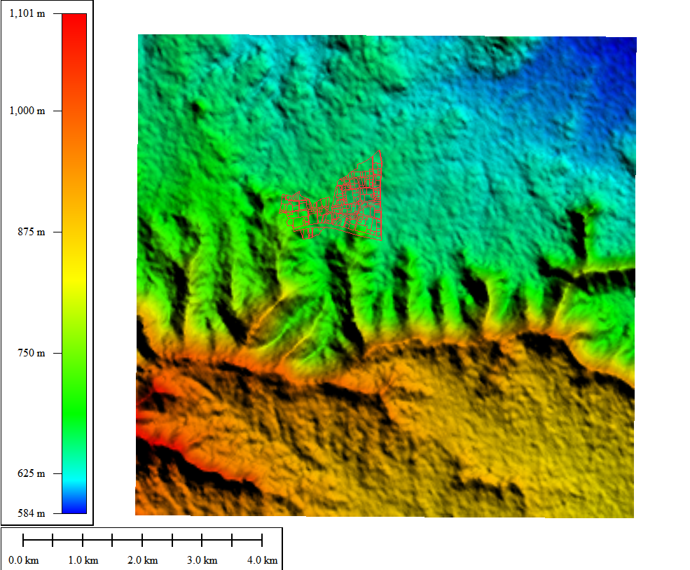
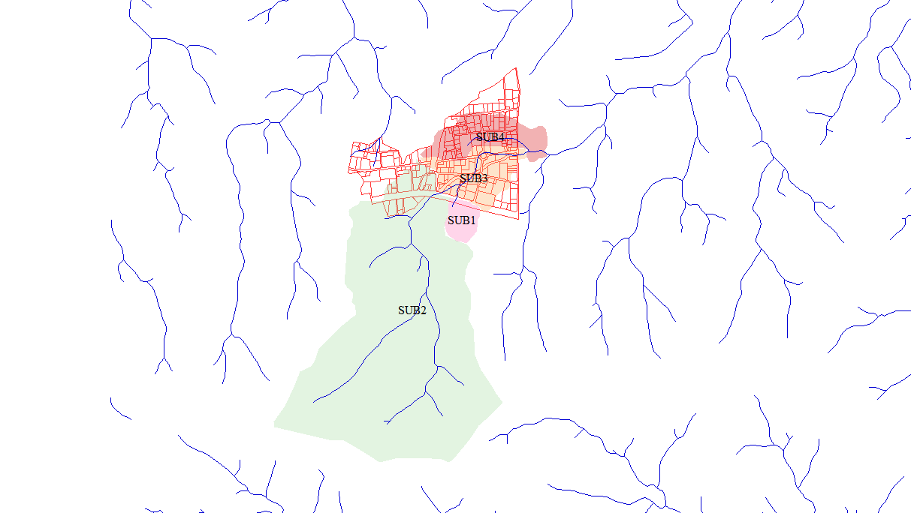
 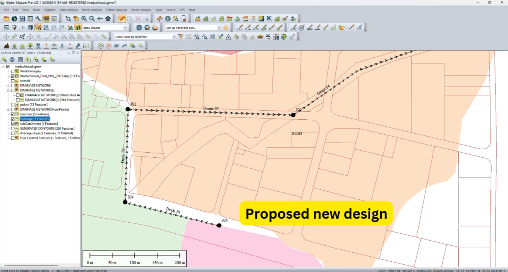
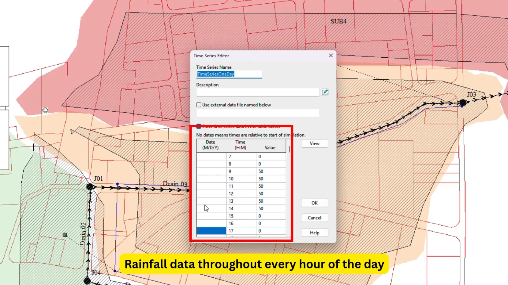
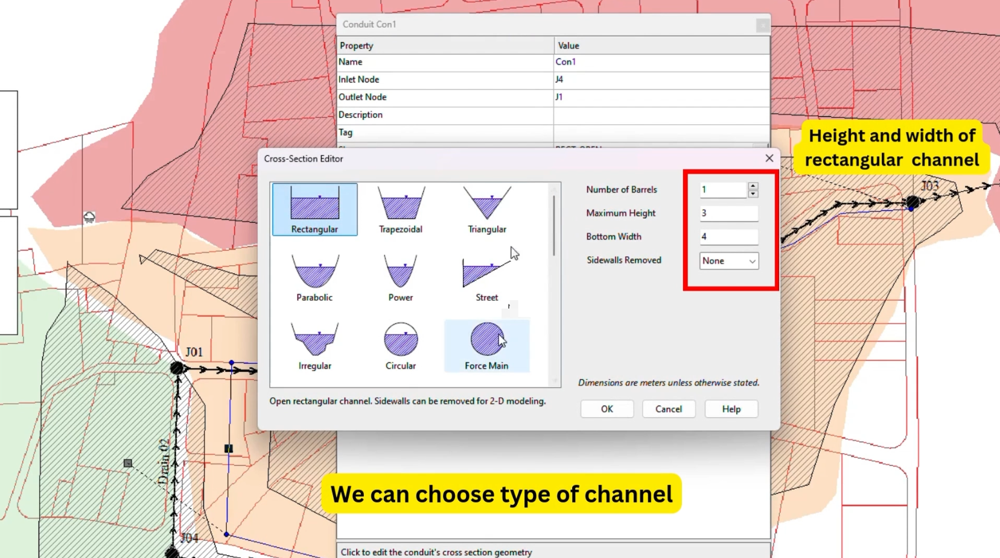
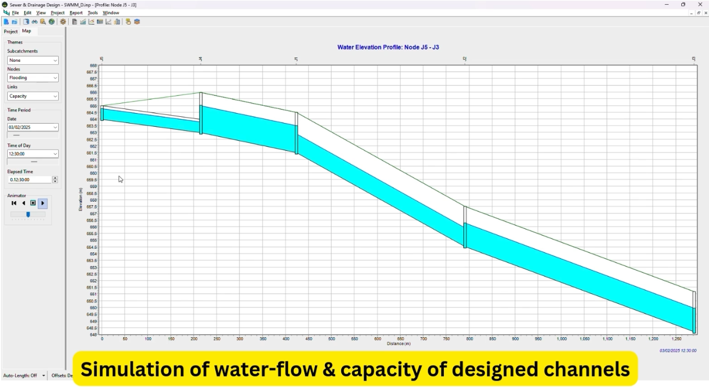
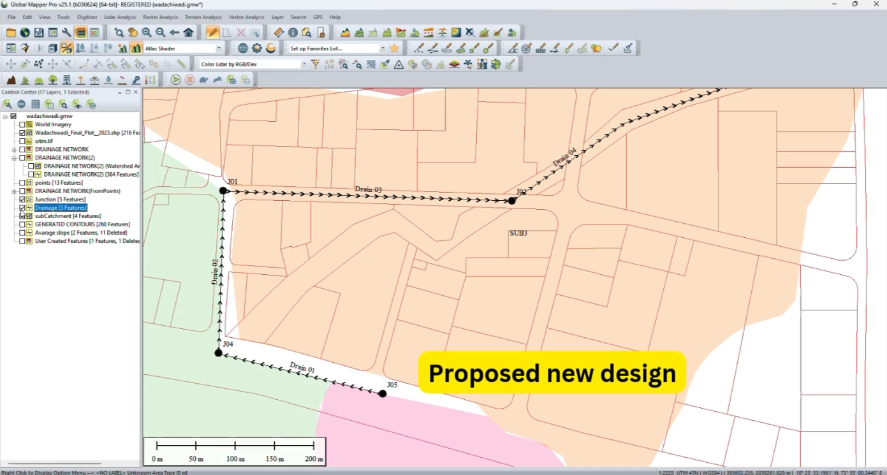
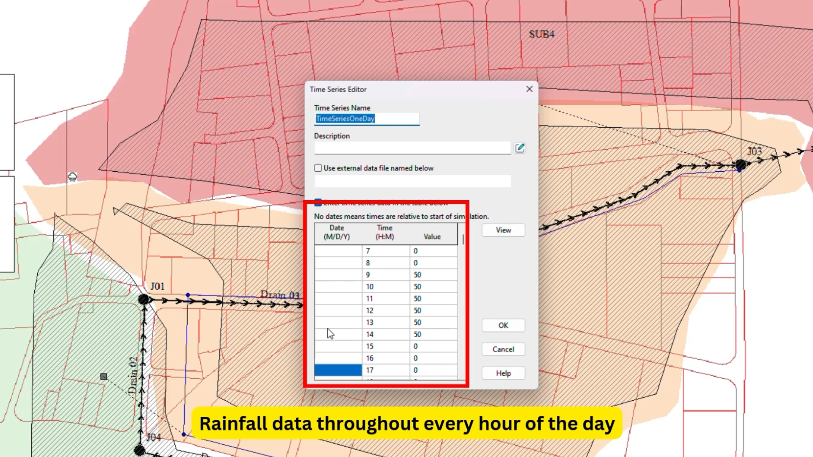
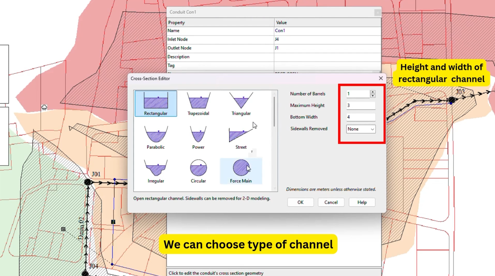
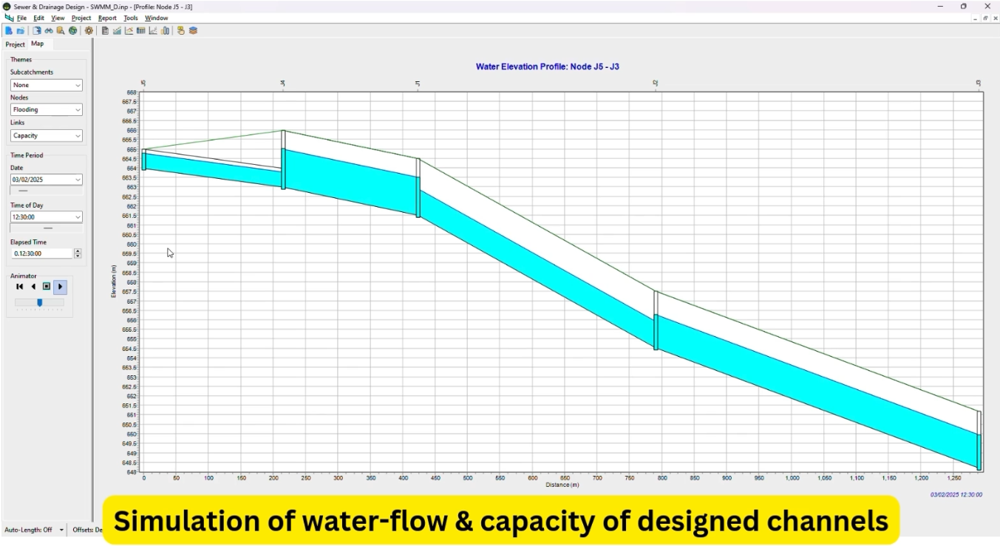
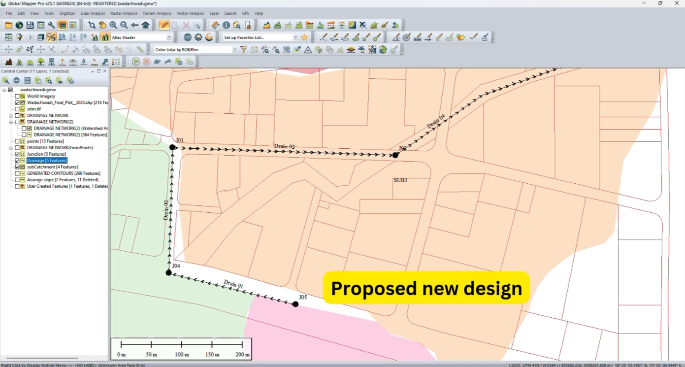
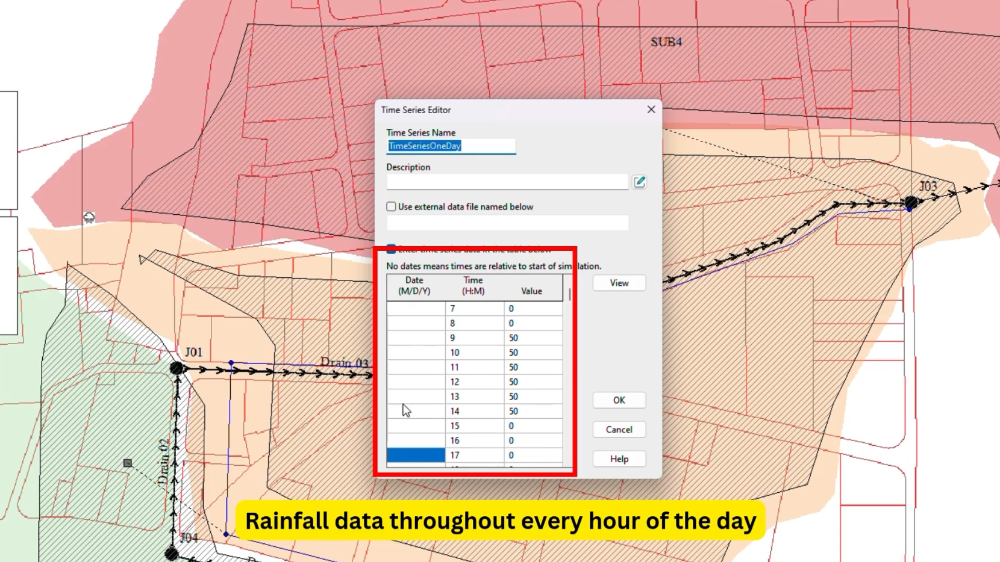
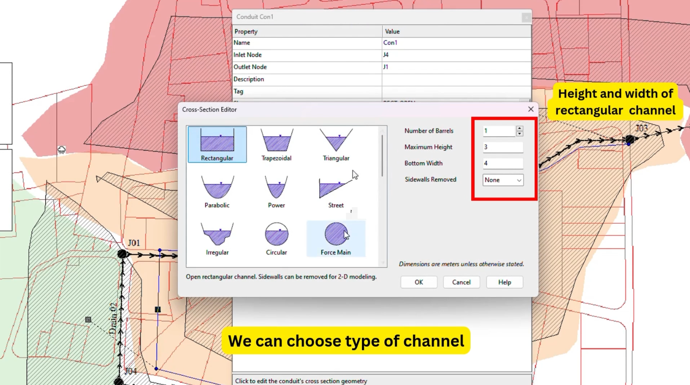
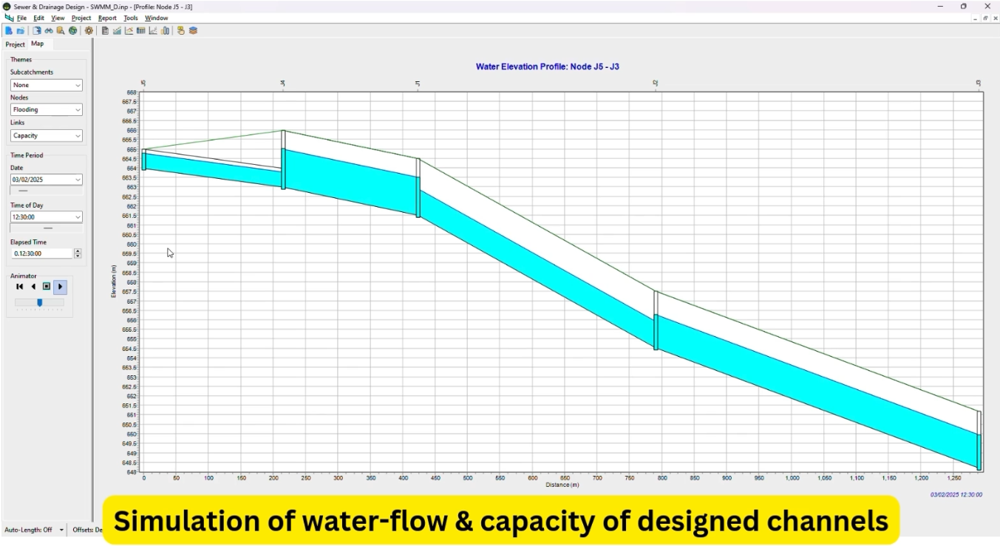